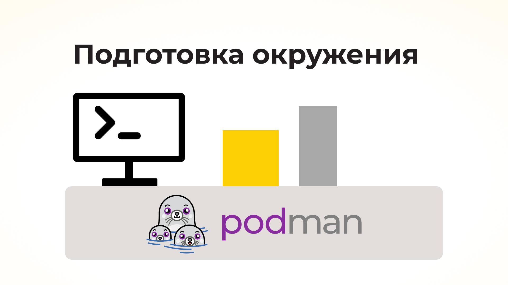

layout: single title: “Запуск второго контейнера” permalink: /chapter-3/ —
Руководство по сборке и запуску контейнеров для дистрибутивов Альт
Документ содержит набор упражнений с заданиями для самостоятельной работы, чтобы познакомиться с основами контейнеризации на примере Alt Linux и Podman. Каждое упражнение включает краткое объяснение теории, пошаговые инструкции, задание для самостоятельной работы и ожидаемый результат. Цель материала - научиться собирать и запускать контейнеры, используя Podman, и освоить ключевые концепции по теме. Руководство предназначено для пользователей операционной системы Альт, владеющих навыком работы в консоли.
Упражнение 1: Установка Podman и подготовка окружения
 Иллюстрация: Мария Фоканова
Контейнеры — это легковесные изолированные среды, содержащие приложение и все необходимые зависимости. Виртуальные машины эмулируют аппаратную часть (“железо”) и затем запускают полноценную гостевую операционную систему. В отличие от виртуальных машин, контейнеры используют ядро хостовой системы и виртуализируют только программную среду выше уровня ОС.
Благодаря этому контейнеры получают эффективный расход ресурсов системы (меньше размер, быстрее запуск). Podman — это движок контейнеров (аналог Docker), который не требует привилегированного демона и поддерживает запуск в rootless-режиме (от непривилегированного пользователя). В ОС Alt Linux Podman доступен из стандартных репозиториев и управляется аналогично Docker. Для упражнения будем работать с системой alt-server-10.4. Перед работой обновим систему и проверим доступ в Сеть для загрузки образов.
Для физических лиц выполнение всех упражнений свободно допустимо на любых дистрибутивах Альт. Функции контейнеризации в корпоративной инфраструктуре для коммерческого использования на ОС 10-ой платформы предоставлены в дистрибутиве “Альт Виртуализация”.
Установка Podman
В системе «Альт Сервер» 10 установим пакет Podman командой:
apt-get update && apt-get install podman
После установки проверим версию:
podman --version
Вывод:
podman version 5.4.0
Движок контейнеров Podman допускает два режима работы — rootless и rootfull. Это означает работу без учетной записи суперпользователя, либо под ней (rootfull). Настройка rootless необязательна, но в этом и последующих материалах организуем работу с Podman в режиме rootless — будем запускать контейнеры без прав root.
Настройка режима rootless
По умолчанию в Alt Linux такая работа не предполагается, поэтому может потребоваться разрешить unprivileged user namespaces. Проверим:
sysctl kernel.unprivileged_userns_clone
Если значение 0 (запрещено), включим через пакет настройки sysctl-conf-userns:
apt-get install sysctl-conf-userns
Содержимое файла настройки:
cat /lib/sysctl.d/48-userns.conf
# Allow to use user namespace by unprivileged user to create sandboxes.
# It's usable for chromium, flatpak, fwupd etc.
kernel.userns_restrict = 0
kernel.unprivileged_userns_clone = 1
Проверим снова:
sysctl kernel.unprivileged_userns_clone
Значение должно быть 1.
Установка прав для вспомогательных утилит
control newuidmap public && control newgidmap public
Эти шаги позволят запускать Podman от обычного пользователя. (Вы можете работать с Podman от root и пропустить предыдущие шаги).
Проверка установки Podman
Выполним команду:
podman info
В ответе получаем информацию о системе контейнеров (хранилище образов, драйверы и т.д.). Если Podman установлен правильно, получаем конфигурацию без ошибок.
Фрагмент вывода:
host:
arch: amd64
buildahVersion: 1.39.0
cgroupControllers:
- cpuset
- cpu
- io
- memory
- hugetlb
- pids
- misc
cgroupManager: systemd
cgroupVersion: v2
conmon:
package: conmon-2.1.12-alt1.x86_64
path: /usr/bin/conmon
version: 'conmon version 2.1.12, commit: alt1'
cpuUtilization:
idlePercent: 99.72
systemPercent: 0.15
userPercent: 0.13
cpus: 8
databaseBackend: sqlite
distribution:
distribution: altlinux
variant: edition_server
version: "11.0"
Тестовый запуск контейнера
podman run --rm docker.io/library/hello-world
В ответ на команду Podman скачает образ hello-world и выведет сообщение приветствия. Вывод сообщения подтверждает работоспособность окружения.
Фрагмент вывода:
Trying to pull docker.io/library/hello-world:latest...
Getting image source signatures
Copying blob e6590344b1a5 done |
Copying config 74cc54e27d done |
Writing manifest to image destination
Hello from Docker!
This message shows that your installation appears to be working correctly.
Задание для самостоятельной работы
- Установите ОС Альт Сервер, обновите и установите необходимые пакеты.
- Убедитесь, что Podman работает в режиме обычного пользователя.
-
Выполните команду под своим рабочим пользователем (без
sudoи безroot):podman run registry.altlinux.org/alt/alt:sisyphus uname -aВ ответе будет информация о Linux (ядро, архитектура) внутри контейнера
alt:sisyphus. Например:Linux 4e8f46204963 6.12.6-6.12-alt1 #1 SMP PREEMPT_DYNAMIC Tue Dec 24 11:38:45 UTC 2024 x86_64 GNU/Linux -
Попробуйте выполнить команду:
podman run alpine uname -aКоманда формирует контейнер из образа базовой системы Alpine.
** Ожидаемый итог:**
- На этом этапе Podman установлен и готов к работе;
- Команда
podman --versionвыводит номер версии Podman; - Пробный запуск контейнера
hello-worldзавершается сообщением приветствия; - В режиме без root успешно выполняются команды Podman; при запуске
podman run registry.altlinux.org/alt/alt:sisyphus uname -aвывод содержит информацию о ядре Linux внутри контейнера
alt:sisyphus; - Окружение подготовлено для последующих упражнений.